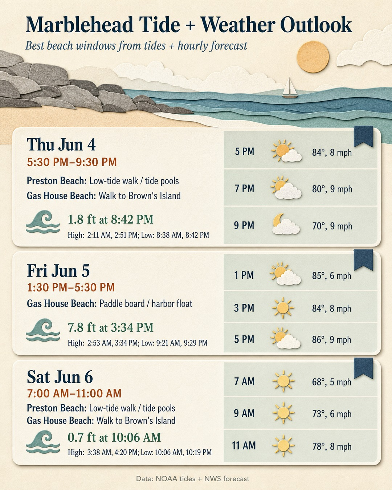

Marblehead Tide + Weather Outlook
Generated 2026-06-04T14:33:06.088416-04:00. Tide predictions use station Salem, Salem Harbor, MA. The image below is the direct asset used for Instagram publishing.

Recommendations
| Day | Best time | Beach | Activity | Tide | Weather |
|---|---|---|---|---|---|
| Thu Jun 4 | 5:30 PM–9:30 PM | Preston Beach; Gas House Beach | Low-tide walk / tide pools | High: 2:11 AM, 2:51 PM; Low: 8:38 AM, 8:42 PM | 84°F · Mostly Sunny · 8 mph |
| Fri Jun 5 | 1:30 PM–5:30 PM | Gas House Beach | Paddle board / harbor float | High: 2:53 AM, 3:34 PM; Low: 9:21 AM, 9:29 PM | 84°F · Mostly Sunny · 8 mph |
| Sat Jun 6 | 7:00 AM–11:00 AM | Preston Beach; Gas House Beach | Low-tide walk / tide pools | High: 3:38 AM, 4:20 PM; Low: 10:06 AM, 10:19 PM | 73°F · Mostly Sunny · 6 mph |
| Sun Jun 7 | 2:00 AM–6:00 AM | Gas House Beach | Paddle board / harbor float | High: 4:27 AM, 5:08 PM; Low: 10:52 AM, 11:12 PM | 68°F · Slight Chance Rain Showers · 8 mph · 17% rain |
| Mon Jun 8 | 3:30 PM–7:30 PM | Gas House Beach | Paddle board / harbor float | High: 5:20 AM, 5:59 PM; Low: 11:41 AM | 68°F · Sunny · 8 mph · 6% rain |
| Tue Jun 9 | 4:30 PM–8:30 PM | Gas House Beach | Paddle board / harbor float | High: 6:18 AM, 6:52 PM; Low: 12:09 AM, 12:32 PM | 77°F · Sunny · 7 mph · 3% rain |
Caption
Marblehead, MA tide + weather outlook 🌊☀️ Best window: Tue Jun 9, 4:30 PM–8:30 PM at Gas House. Paddle board / harbor float. High 6:52 PM · 8.9 ft. Built from NOAA tides + NWS hourly weather. #MarbleheadMA #NorthShoreMA #LowTide #BeachWalk
latest.json · PNG · JPG
{kind=link}
{kind=link}